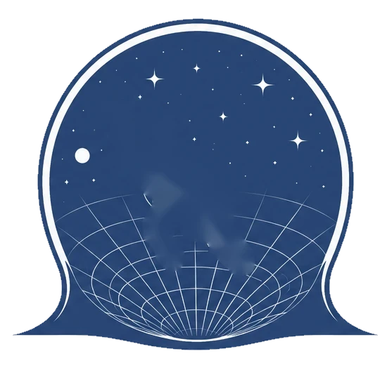

作品集｜引力流域設計 GraviFlow Design
{{ starField }}

關於我們
作品集
免費線上諮詢
關於我們
作品集
免費線上諮詢
{{ heroStars }}
PORTFOLIO
{{ ch }}
{{ t.label }}
{{ g.title }}
{{ g.en }}
{{ c.industry }}
{{ c.name }}
{{ c.short }}
{{ c.cta }}
↓
{{ chip }}
{{ c.d.name }}
{{ c.d.short }}
{{ m.label }}
00:00 / 00:00
00:00 / 00:00
{{ tb.label }}
{{ b.en }}
{{ b.head }}
{{ it.t }}
前往網站 ↗
我想做類似網站 →
收合內容
{{ chip }}
{{ c.d.name }}
{{ c.d.short }}
{{ m.label }}
00:00 / 00:00
00:00 / 00:00
{{ tb.label }}
{{ b.en }}
{{ b.head }}
{{ it.t }}
前往網站 ↗
我想做類似網站 →
收合內容
看到喜歡的作品了嗎？
讓你的專業，
也成為吸引對的人的引力。
免費線上諮詢 →